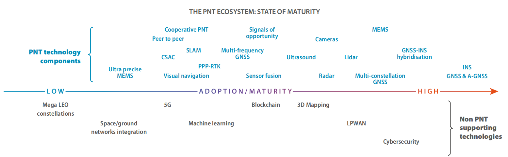

GNSS高精度定位解决方案发展现状简要分析
文章目录
GNSS高精度定位解决方案发展现状简要分析
一、GNSS高精度定位的主要特征和关键参数
1 测绘领域用户的主要特征
作为 GNSS 解决方案的高级用户，测绘专业人员正受益于接收机技术的显著改进，例如在多星座 GNSS 时代到来后信号的高可用性、价格下降和多重可用性。包括土地测量 （地籍、建筑和矿山 )、测绘和海洋测量 （海洋地籍、水文和海洋测量）在内的若干部门受益于基于 GNSS 的高精度解决方案的推广。多星座和多频接收机以及各种差分校正技术 (SBAS、RTK 和 DGNSS) 和精密单点定位（PPP），是目前测绘部门的首选方案。
2 关键性能参数
关键性能参数很大程度上取决于所完成的特定应用。
（1）精度
对于不同的操作，精度要求从米到亚米到厘米不等。它通过部署多星座和多频接收机以及利用RTK、PPP、SBAS 或其组合来实现。某些农业活动（例如，固定道）不仅要求通行精度，而且对逐年 累积误差 (GNSS 漂移）提出了要求。
（2）可用性
特别是在信号接收环境变差或农村地区，可用性变得至关重要。
（3）首次定位时间
改进的“首次定位时间”和（重新）收敛时间转化为在测量项目上花费的总时间减少，随后可降低成本。
（4）完好性
完好性对生命安全 （和设备）应用 （即机械控制）至关重要，并且与资本密集型应用 （例如采矿和海上应用）相关。
（5）连续性
连续性对于将由于卫星接收信号不良导致的运行停机时间减到最小至关重要 （例如，海洋工程 )。
二、高精度接收机发展现状
1 采用多星座模式
几乎所有高精度细分领域的用户都受益于使用多星座接收机。这包括提高可用性 （特别是在信号衰减的环境、城市峡谷或农村地区 )、更快地求解模糊度、获得更大的覆盖范围 （尤其是北纬地区 )、增加的适应性 （特别是对授时用户）和改进的卫星几何因子。因此，目前针对专业应用的绝大多数接收机能够处理至少两个星座的信号，而 40％具有跟踪四个星座的能力。
2 采用多频模式
只有使用多频接收机，才能满足一些对精度要求很高的应用场合（包括农业应用中的自动转向和多次测量操作）。这是通过从位置计算中消除电离层误差和有效减少多径效应来实现的。同样地，采用伽利略 E5、GPS L5 以及伽利略 E6 使得三频接收机类型增多，使得 PPP 和差分定位的收敛时间显著减少。使用三频接收机的另一个好处是增加了抗干扰的能力。
虽然许多接收机制造商现在提出多星座能力(GPS、Galileo、GLONASS 和北斗）以提高可用性和可靠性，但是提供双频 GNSS——尽管目前是微不足道的——不仅在高端定时接收机市场，而且在中端接收机中也越来越多地被考虑用于消除电离层效应。为了限制对接收机成本的影响，一些制造商还致力于创新解决方案，以尽量减少单频电离层影响，例如 NeQuick 模型实现。


三、GNSS的驱动因素和发展趋势
1 GNSS 信号结构和芯片设计的现代化给测量领域带来巨大效益
所有主要的 GNSS 测量组件制造商都在集成所有的 GNSS 频段，包括没有公开的 ICD（例如，北斗B3、GLONASS L3 CDMA 和伽利略 E6) 的信号。这对三载波模糊度分辨率(TCAR)和超宽巷算法有利，可使得首次定位时间 TTFF(RTK) 快速解算、PPP 算法更快收敛、电离层效应消除得更好等。
组件制造商本身正在成为 PPP 服务提供商，或者与这些服务提供商合作，并因此在其芯片组中嵌入专用的专有功能，从而在单个芯片中可提供 RTK 和 PPP 的最佳组合。这种方法对于在没有足够的蜂窝覆盖 （边远地区、边远地区等 )而无法进行 NRTK 解算的区域进行测量是非常实用的，但是高精度的卫星 L 频段修正信号为测量工作者提供了即可获得的备选方案。
抗干扰、干扰检测和多径抑制技术的发展，为在具有大量噪声信号的城市地区进行测量提供了便利。
2 即将到来的免费高精度服务的新机遇
基于 GNSS 的解决方案在高精度领域的发展由以下因素驱动：性能要求、不断增加的竞争对价格造成显著的压力，以及需要充分利用不同技术 （包括 IMU、LIDAR 等）的集成解决方案。因此，寻求分米到厘米精度的用户主要应用 RTK 解决方案，或者当这些解决方案不可用时 （例如在海洋环境或在缺乏 RTK 网络的接入的农村地区 )，可以使用PPP。考虑到持续获得高精度解决方案的重要性，从提供这种基于 PPP 的服务使得使用 Galileo HAS得到的好处包括：
- 接收机水平定位精度为 20cm。
- 全球覆盖，包括高纬度地区。
- 使用 Galileo E6 数据信道进行增强消息广播。
- 通过电离层校正减少收敛时间，实现区域精度增强。
根据一些欧盟国家 CORS 网络或区域系统（例如 QZSS）发展趋势，将免费提供该服务。预计这种方法将为创新服务和商业模式带来新的机会。
3 GNSS高精度定位解决方案集成化发展趋势
（1）在单个解决方案中组合不同技术中的最佳技术
在多样化且常常是困难的环境中执行复杂、高精度操作的需求一直推动着集成解决方案在市场中的出现。因此，除了最大限度地利用到达多星座和多频率环境的可能性之外，一些解决方案依赖于GNSS与其他技术（IMU、全站仪、激光雷达）的集成。在这方面，硬件级的互操作性与从单个软件接口访问适当工具的能力相耦合，从而允许用户无缝地切换 (例如，在地形测量中在 GNSS与全站仪之间切换，以及在大型建筑工地进行监视 )。与其他传感器的集成对于水文测量也是至关重要的，因为水深测量通常由多波束回波探测仪(MBES)或激光雷达执行，GNSS 分别提供船只或飞机上 （传感器上）的确切位置，INS 提供其方向。
（2）一体化设计
在高精度行业中，一种常见的趋势是“连接”操作，允许经理办公室和现场工人之间进行持续的通信。因此，大型农业资产或建筑和采矿场地的管理者，或海洋作业的监督者和负责 GNSS/GIS 支持资产管理的专业人员，需要能够监测、规划和决策，以提高生产率和成本优化的一体化解决方案。
（3）从网络到用户
PPP-RTK 解决方案是对 PPP 概念的扩展，通过向单接收机用户提供信息，与标准 PPP 相比，能够减少收敛时间。因此，除了精密的卫星时钟、星历和相位偏差之外，PPP-RTK 还利用本地 / 区域 /国家 RTK 网络向用户提供电离层和对流层延迟校正，完成模糊度解算，并在显著减少的时间内实现厘米级精度。这种方法可以使高精度市场中的若干应用部门受益，因此目前正在部署基于不同方法的多个解决方案。
4 PNT技术聚集化发展
所有解决方案提供商都强调了确保 PNT 解决方案的安全和保全的必要性 , 特别是在脱离人类控制的环路系统中 , 例如在自主船只、无人驾驶汽车或无人机中。交通运输和关键安全领域，传统上受 到规则和标准的束缚，因此减慢了新技术的采用，这种情况现在已经开始发生重大变化的趋势表明，新兴的无人驾驶汽车，专业或“专业消费者”无人机的出现，以及自主船舶开发，现在正在以非常快 的速度开放这些尚未受到行业监管的应用领域。多个星座、多频率、惯性导航系统混合和多传感器融合，都用于促进所需的“确保的”和安全的定位解决方案。虽然目前的解决方案表明，对于自动化应 用的高精度基本上是可以实现的，但是真正的实际工作仍然需要解决高水平的完好性、连续性和安全性，这些对于保证生命安全应用都是必不可少的。
在专业领域，利用三频或四频接收机，使用所有的 GNSS 星座和信号，以及 RTK，和网络 RTK（NRTK）与更高的实时 PPP 增强服务，达到高精度。接收机甚至有几百个通道，并已开始配置检测某些非预期的（干扰、欺骗或多径）信号。显而易见，由私营企业和公共系统运营商提出的 PPP/ RTK服务的兴趣与日俱增 , 这导致了新的 PPP / RTK 概念 , 旨在解决高精度以外的广大客户群，也就是向大众化市场进军。
在 PNT 生态体系图中，可以看到为了确保四大功能性能的实现，需要 PNT 技术的集聚和非 PNT 的支撑技术，累加起来达到近 30 项技术，当然实际应用中，在某些场合就不需要全部技术的 堆积，而是优选其中若干技术形成相关应用系统。正如技术集聚图中所示，针对室内、室外，相对、绝对定位会有不同的组合和分野。同时可以看到，只有在技术总体上有所把握，才能理清思路， 获得价廉物美、配置上佳的应用与服务终端产品的优势解决方案。
观许多技术将要被被GNSS导出的位置和时间所驱动，不仅仅是用于信息目的，也用于监测和日益增加的控制任务，这正是在机器人，或者各种无人系统载体的导航中的难题。总而言之，这个专门问题就是自动化，在部分或完全自动化的任务和功能中，GNSS 发挥着日益显著的作用。尤其是在交通运输领域中发现，随着无人驾驶汽车、自动船舶和自主无人机应用与服务中，不难看到，基于 GNSS 的自动化应用服务远远超出了交通运输范畴。

四、高精度数据处理技术
1 RTK/网络RTK
1.1 基本原理（实时载波相位双差定位）
（1）RTK
RTK基本概念：
常规RTK技术是一种对动态用户进行实时相对定位的技术, 该技术也可用于快速静态定位。进行常规RTK工作时, 基准站需将自己所获得的载波相位观测值(最好加上测码伪距观测值) 及站坐标, 通过数据通信链实时播发给在其周围工作的动态用户。于是这些动态用户就能依据自己获得的相同历元的载波相位观测值(最好加上测码伪距观测值) 和广播星历进行实时相对定位, 并进而根据基准站的站坐标求得自己的瞬时位置。为消除卫星钟和接收机钟的钟差, 削弱卫星星历误差、电离层延迟误差和对流层延迟误差的影响, 在RTK 中通常都采用双差观测值。
RTK能够在野外实时得到厘米级定位精度的测量方法，它采用了载波相位动态实时差分方法，极大地提高了作业效率。
RTK软件应具备的功能：
- 快速准确地确定整周模糊度
- 基线向量解算
- 解算结果质量分析与精度评定
- 坐标转换
RTK技术的局限性：
- RTK测量中流动站与基准站之间的距离一般在15KM以内，距离增加会导致各种误差的累计，甚至无法固定模糊度而只能获得浮点解，当距离达到50KM，历元解只能获得分米级精度。
- 流动站坐标只是根据一个基准站确定，可靠性较差。
（2）NRTK
通常把在一个区域内建立多个（一般为三个或三个以上）的GPS参考站，对该区域构成网状覆盖，并以这些基准站中的一个或多个为基准计算和发播GPS改正信息，从而对该地区内的GPS用户进行实时改正的定位方式称为GPS网络RTK，又称为多基准站RTK。
网络RTK技术与常规RTK技术相比，扩大了覆盖范围，降低了作业成本，提高了定位精度，减少了用户定位的初始化时间。
1.2 主要定位误差
（1）卫星轨道误差
一般情况下，网络RTK系统的基准站之间距离小于50KM时，直接使用精度为10m的广播星历可以满足系统要求；当距离超过50KM后，难以确定基准站之间的模糊度。
IGS提供的精密预报星历可以提前得到，精度可以达到0.5m，对200KM的基线影响小于0.005m，因此在网络RTK数据处理中，使用IGS提供的精密预报星历，轨道误差可以忽略。
（2）对流层延迟
网络RTK流动站数据处理中，一般在短距离情况下，通过现有的对流层函数模型直接进行改正，也可以通过基准网建立的对流层改正模型或内插得到的误差改正数进行改正。
在基线距离比较长，又不知道大气参数的情况下，在计算计转站模糊度的同时，将对流层延迟参数估计出来。
（3）电离层延迟
电离层延迟误差影响GPS定位误差最显著，不仅误差值较大，而且变化复杂。
电离层具有空间相关性，双差电离层延迟残差大小与极限长度有关。一般采用双差无电离层组合模型消除该项误差。
此外也可以通过迷行加以改正：基于格网的模型和基于函数的模型。
1.3 关键技术
（1）整周模糊度的确定
（2）区域误差模型建立和流动站误差计算
（3）流动站双差模糊度的确定
（4）大规模基准站组网
1.4 服务技术
（1）虚拟参考站技术
（2）主辅站技术
（3）区域改正参数方法
（4）综合误差内插法
1.5 发展趋势
（1）长距离和大规模
（2）多频多模的网络RTK系统
（3）高可靠的单历元高精度定位
（4）完备性
2 PPP
2.1 发展现状
利用预报的GPS卫星的精密星历或事后的精密星历作为已知坐标起算数据；同时利用某种方式得到的精密卫星钟差来替代用户GPS定位观测值方程中的卫星钟差参数；用户利用单台GPS双频双码接收机的观测数据在数千万平方公里乃至全球范围内的任意位置都可以2-4mm级的精度，进行实时动态定位或2-4cm级的精度进行较快速的静态定位，精密单点定位技术，是实现全球精密实时动态定位与导航的关键技术，也是GPS定位方面的前沿研究方向。
2.2 基本原理
精密单点定位指的是利用全球若干地面跟踪站的GPS观测数据计算出的精密卫星轨道和卫星钟差, 对单台GPS接收机所采集的相位和伪距观测值进行定位解算。所解算出来的坐标和使用的IGS精密星历的坐标框架即ITR 框架系列一致, 而不是常用的WGS-84坐标系统下的坐标。
基本原理是构造无电离层伪距组合观测值和无电离层载波组合观测值，测站坐标、接收机钟差、模糊度及对流层延迟作为未知参数，进行泰勒级数展开保留一次项系数构造误差方程，最小二乘原理求解参数。
2.3 定位误差
由于PPP使用非差观测值，没有组成差分，因此GPSS定位中所有的误差项都必须考虑。
（1）对于能够精确模型化的误差，采用模型改正，如卫星天香相位中心的改正、各种潮汐的影响、相对论效应等。
（2）对于不能够精确模型化的误差，加参数进行估计或者利用组合观测值。如对流层天顶湿延迟，目前难以用模型精确模拟，则加参数进行估计；而电离层延迟误差，可采用双频无电离层组合观测值消除低阶。
2.4 优势前景
优势：
（1）单机作业，机动灵活，不受作用距离的限制；集成了标砖单点定位和差分定位的优势。
（2）基于非差模型，没有在卫星之间求差，因此在多系统组合定位中处理模型要比双差简单。
（3）非差模型中保留了所有信息，对于从事大气、潮汐等相关领域的研究具有优势。
应用前景：
（1）结合INS等技术可以实现真正无地面控制的航空测量。
（2）可应用于到高精度静态定位、精密时间确定和时间传递以及对流层参数估计等。
（3）实现毫米级的单点静态定位和厘米级到分米级的动态单点定位。
2.5 待解决问题
（1）PPP的定位精度和可靠性很大程度上取决于IGS产品的可靠性和精度，因此IGS产品质量分析需进一步研究。
（2）PPP中的非差组合模糊度不再有整数特性，如何加速模糊度的收敛时间和质量控制是研究课题。
（3）对于飞机等高动态载体，大气参数状态会发生很大的变化，因此高动态长距离的PPP对流程参数估计方法还需进一步研究改进。
（4）多频多模PPP技术。
五、个人总结
（1）PPP技术较于RTK技术，无需基准支持，单机灵活，应用前景更为广泛。但目前PPP商用技术发展不是特别成熟，仍需进一步发展。
（2）多频多模技术已成为GNSS定位的发展趋势。
（3）GNSS结合传感器等技术在自动化、智能化领域的应用优势更为广泛和突出。
（4）解算质量分析和评估需进一步完备。
主要参考文献
- GSA GNSS Market Report 2017
- GSA GNSS User Technology Report 2018
- 卫星导航定位新技术及高精度数据处理方法，武汉大学出版社
- GPS测量与数据处理，武汉大学出版社
文章作者 GSir
上次更新 2019-04-30